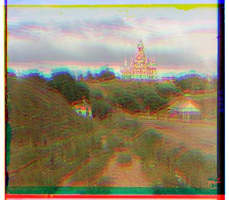
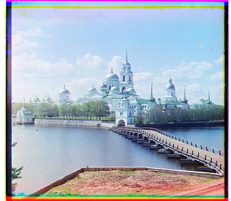
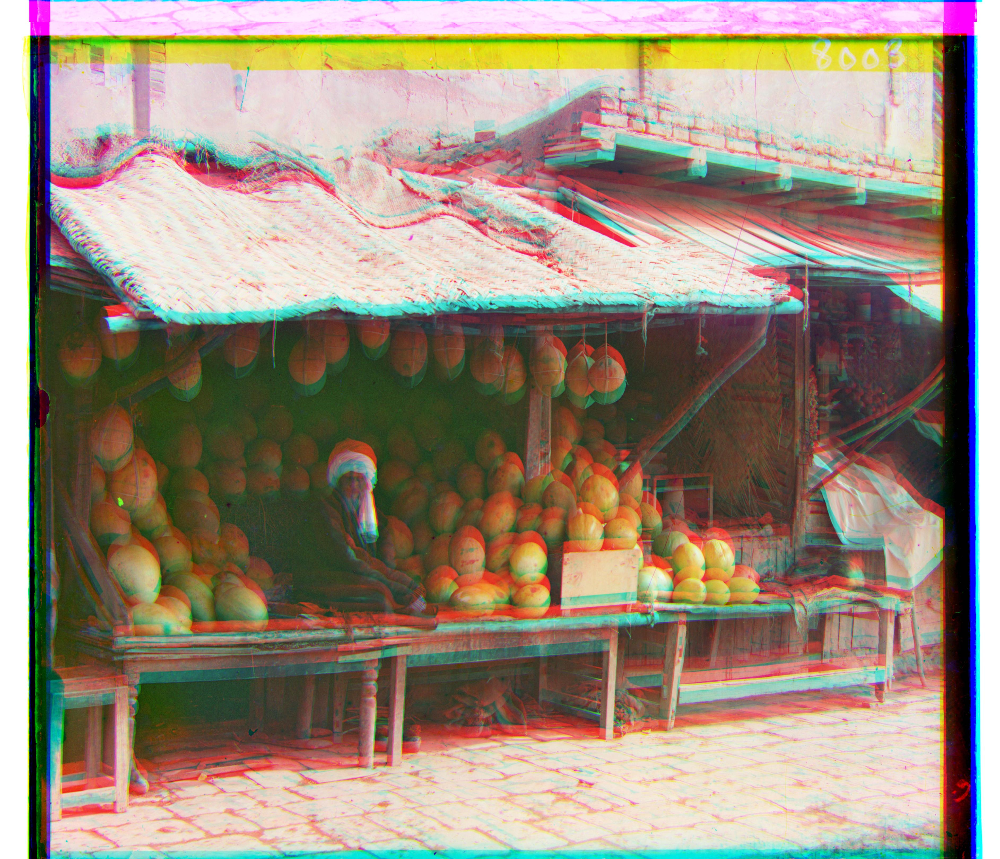
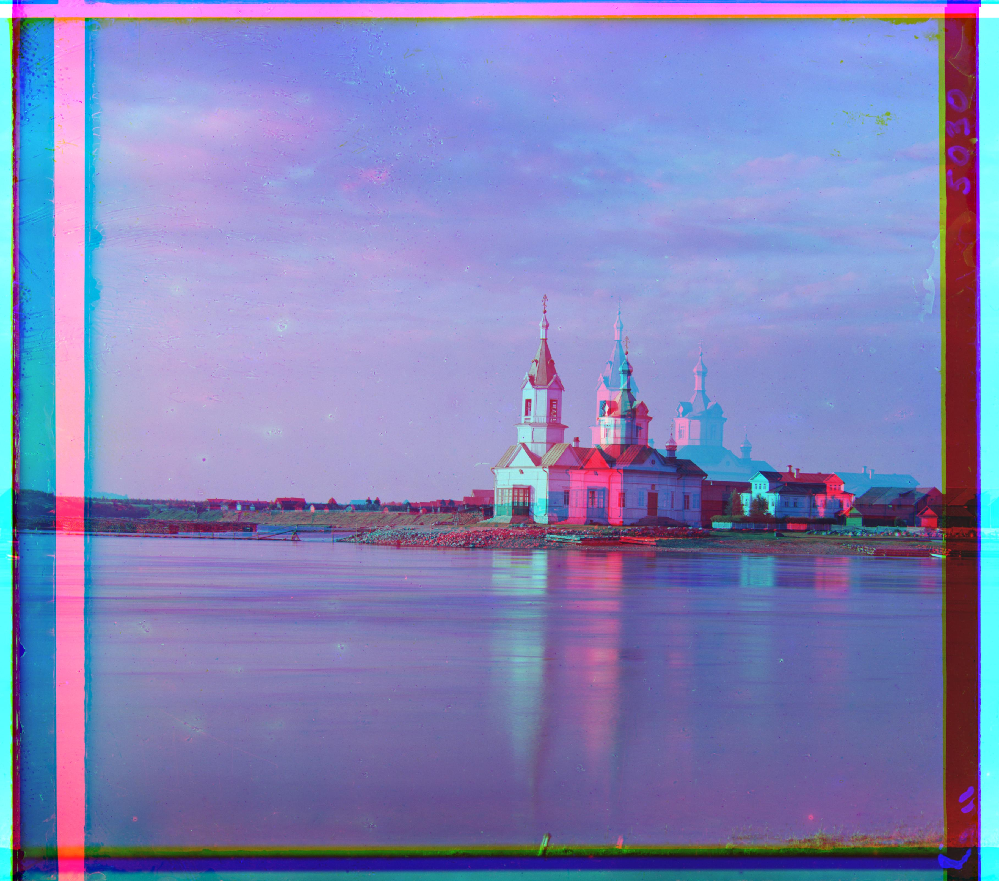
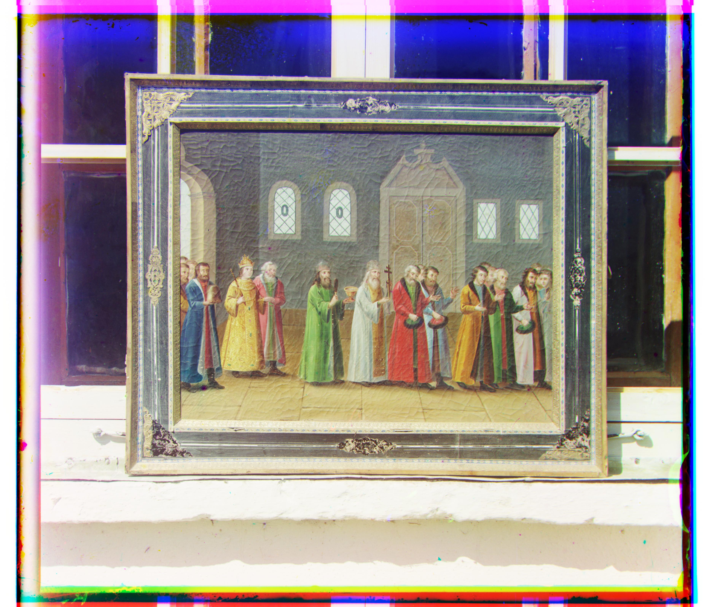
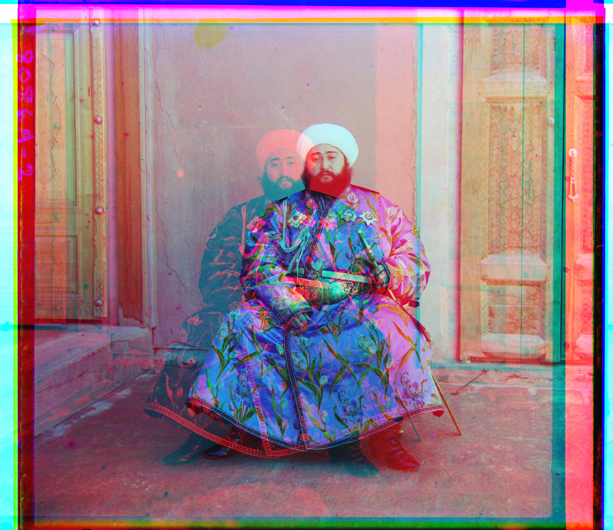
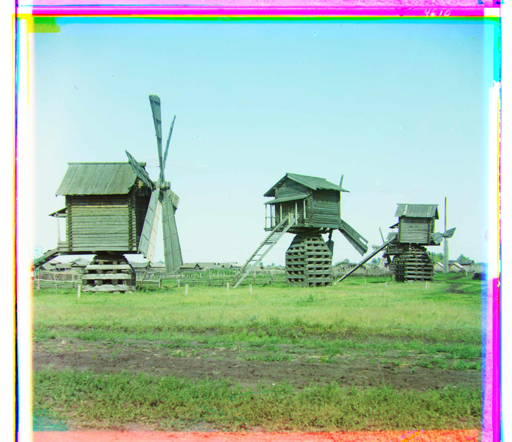

Colorizing the Prokudin-Gorskii Collection
For this project, I combined three grayscale exposures into a color image by finding the shifts that line up their details.
Approach
Each scan contains three separate exposures stacked in B, G, R order. Their positions differ slightly, so combining them directly creates colored outlines.
I convert the scan to floating-point values in [0, 1], split it into three equal-height channels, and use blue as the reference. After finding the shifts for green and red, I stack the aligned channels in R, G, B order.
How I compare two channels
I first tried squared L2 distance, Σ(A − B)², which chooses the shift with the smallest sum of squared pixel differences. All final results use normalized cross-correlation (NCC). NCC subtracts each region’s mean and normalizes its magnitude, making the comparison less sensitive to overall brightness and contrast differences.
A and B are the channel regions being compared, μ is each region’s mean, and the sums run over their pixels. I choose the shift with the highest NCC score.
Ignoring the borders
At every scale, I exclude 10% from each side when scoring a shift to reduce interference from scan borders and wrapped pixels. The saved images keep their full dimensions, so colored borders remain.
Single-scale alignment
For each green and red channel, I try every shift from −15 to 15 pixels on both axes: 961 candidates. I apply each shift with np.roll, compare its interior against blue, and keep the highest-scoring match.
This aligns all three small JPEGs. Cathedral’s tower and foreground roofs show the improvement below.
Offsets are (x, y) in pixels: positive x moves right and positive y moves down. G and R are shifts relative to blue. Click any image for full resolution.
Cathedral, before and after



Monastery and Tobolsk



Image pyramid
The TIFFs need much larger shifts. An image pyramid makes the search faster by finding the rough alignment on smaller images, then refining it at larger sizes:
- Resize both channels to half their size, with anti-aliasing. Repeat until the largest dimension is below 400 pixels.
- Run the ±15-pixel search on the smallest images.
- Return to the next larger size, double the offset, and shift the moving channel by that amount.
- Search ±2 pixels around this estimate. Add that correction to the offset and repeat until reaching full resolution.
Halving the image roughly halves the shift to find. Each finer level then checks only 25 nearby shifts per channel. I implemented this recursion in pyramid_align, using scikit-image for resizing and NumPy for the search. I use these settings and NCC on channel pixels for all seventeen images.
Melons: adding one more level
With a 500-pixel stopping threshold, melons’ 178-pixel red shift is still about 22 pixels at the smallest scale, outside the ±15 window. Lowering the threshold to 400 adds a level and reduces that shift to about 11 pixels. Both runs use NCC.



The extra level brings the roof, the man, and the melon piles into alignment.
Church: switching from L2 to NCC
L2 shifts church’s red channel too far right, creating a second building outline. NCC fixes the match. Only the metric changes here; both runs use the final pyramid settings.



Full-resolution results
These ten supplied TIFFs aligned well at their original resolution. Emir’s failed result is shown separately below.
The pyramid also produces identical results for the three small JPEGs: they are already below 400 pixels, so it uses the single-scale base case. Together, these cover all fourteen supplied images.





Offsets for all fourteen supplied images
| Image | Green (x, y) | Red (x, y) | Method / result |
|---|---|---|---|
| Cathedral | (2, 5) | (3, 12) | Single-scale / pyramid base case |
| Monastery | (2, -3) | (2, 3) | Single-scale / pyramid base case |
| Tobolsk | (3, 3) | (3, 6) | Single-scale / pyramid base case |
| Church | (4, 25) | (-4, 58) | Pyramid |
| Emir | (24, 49) | (-205, 141) | Pyramid / failed |
| Harvesters | (17, 60) | (13, 124) | Pyramid |
| Icon | (17, 41) | (23, 89) | Pyramid |
| Ilemselga | (7, 40) | (11, 130) | Pyramid |
| Melons | (11, 82) | (13, 178) | Pyramid |
| Religious painting | (3, 28) | (7, 68) | Pyramid |
| Self portrait | (29, 79) | (37, 176) | Pyramid |
| Siren | (-6, 49) | (-25, 96) | Pyramid |
| Three generations | (14, 53) | (11, 112) | Pyramid |
| Wharf | (-7, 15) | (-16, 83) | Pyramid |
Where alignment failed: Emir


Emir is the one clear failure. The red channel shifts too far left and down, creating a second face and colored outlines across his clothing.
The likely cause is the clothing’s different brightness across the exposures. NCC handles overall brightness changes, but individual colors can change differently under each filter. A wrong coarse match can therefore score well, and the ±2-pixel refinement cannot recover from it. Comparing edges would be a possible next step.
Remaining artifacts
Scan marks and movement between exposures still cause some local artifacts. I did not implement optional bells and whistles, such as automatic cropping or color correction.
Three additional images
I downloaded these three TIFF scans from the Library of Congress collection and aligned them at full resolution with the same NCC pyramid settings. Each result links to its source.



| Image | Green (x, y) | Red (x, y) | Method |
|---|---|---|---|
| Bashkir near his house | (-4, 57) | (-11, 113) | Pyramid |
| Leushinskii women’s school | (16, 31) | (23, 79) | Pyramid |
| Mills | (14, 56) | (23, 125) | Pyramid |